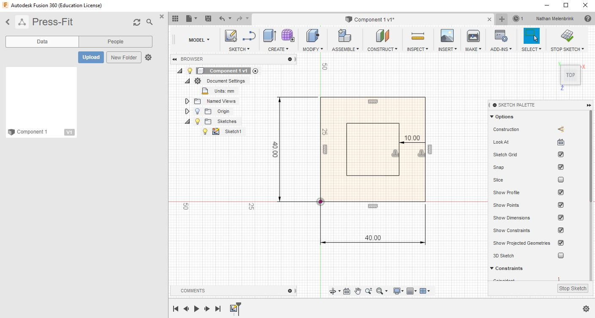
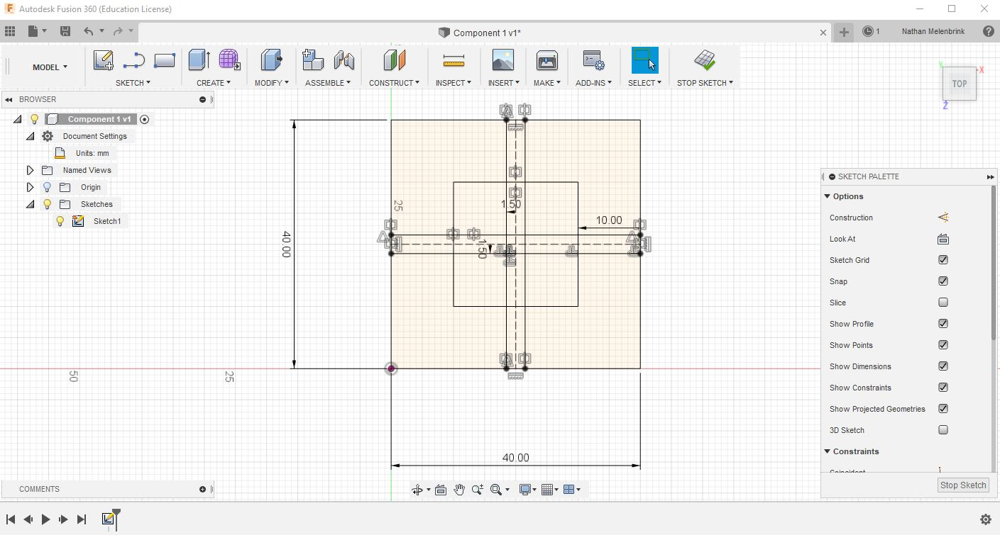

Fusion 360: Introduction to Fusion Sketch
Sketching in 2D
Almost all Fusion 360 projects begin with a sketch. Sketches are 2D vector drawings that can be used as templates for 3D objects -- but they're also useful in and of themselves for making cuts in sheet material. This tutorial will go through the basics for creating a simple washer, modifying it, and exporting it to cut on the laser cutter. Most of the techniques that will be needed are covered in this video.
Rectangle with a hole.
For our first exercise in Fusion 360, we'll design and laser cut a rectange with a hole that fits around our 16mm bearing..
Sketching in Fusion 360
Open Fusion. Start by making a new folder called something like "2D-things". In your modeling window, click the "Sketch" tab and select the XY plane such that your sketch is visible from the Top view. Expand the Document Settings menu and make sure you're working in mm units. Go ahead and save the file to your new folder as something like "First Object".
Find "Rectangle" in the Sketch tab, and draw an outline for your component. 40mm by 40mm is a good size to start (you can change it later by double-clicking on the sketch dimension).
Now find "circle" (or use the keyboard shortcut "c") and place a circle in the center of the rectangle. Set its diameter to match the otside diameter of the bearing.
One consideration that we've overlooked so far is the kerf, or the width of the material that is removed as the laser burns through it. Typically this is a few tenths of a millimeter, so it may seem negligible. However, if we want our collar to fit tightly, it's important to include this. We can set user parameters (Modify -> Change Parameters) and set a bearing diameter parameter as well as a kerf parameter. Then we can set our diameter to be (bearing diameter - 2 * kerf).
Once you're happy with your sketch, let's extrude it to make a 3D representation. Click the "Home" icon in the top right navigation gizmo to go into perspective view. Type "E" to extrude, and click all of the boundary areas you want to include in the extruded shape. Type in the thickness of the material and click OK.

Select each shape you want to include and click OK. Delete the rectangle (it was just for reference) and click Stop Sketch. Turn off the light bulbs for your 3D components, leaving only the 2D Sketch visible. Right-click on the Sketch containing the projected geometry (should be the only one in your file) and select Save As DXF. That's all we need; we're ready to take it to the laser.